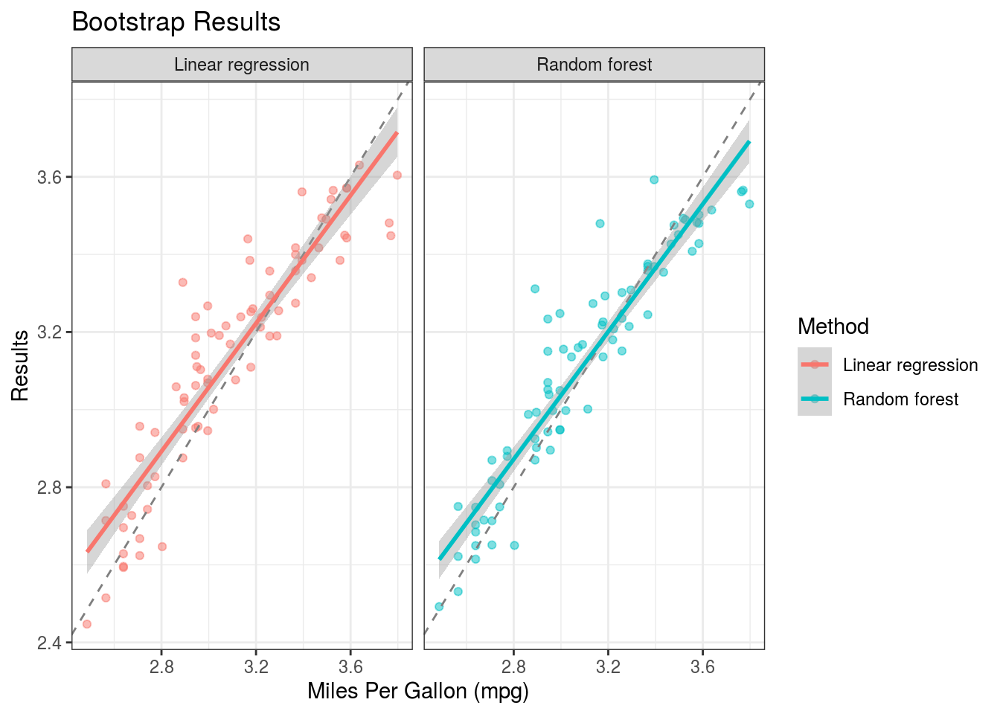

Data used in this paper was originally downloaded from
UCI Archive (Auto MPG Data Set)
This dataset was taken from the StatLib library which is maintained at Carnegie Mellon University. The dataset was used in the 1983 American Statistical Association Exposition. This dataset is a slightly modified version of the dataset provided in the StatLib library. In line with the use by Ross Quinlan (1993) in predicting the attribute “mpg”, 8 of the original instances were removed because they had unknown values for the “mpg” attribute. The original dataset is available in the file “auto-mpg.data-original”. “The data concerns city-cycle fuel consumption in miles per gallon, to be predicted in terms of 3 multivalued discrete and 5 continuous attributes.” (Quinlan, 1993)
I loaded the auto-mpg.csv into mpgDF. I removed the spaces from the variables using gsub and removed the NAs with na.omit. To just have numerical entries in this dataset, I also removed the car.name variable using the select function from the dplyr package[@R-dplyr]. After cleaning up the data and inserting it into auto_vars. The resulting auto_vars includes the variables: mpg, cylinders, displacement, horsepower, weight, acceleration, model.year, and origin. A linear model was then created as fit_lmcomparing mpg to the other variables(.). I will be building a regression type model.
set.seed(50)
mpgDF <- read.csv("auto-mpg.csv")
colnames(mpgDF) <- gsub("\\s", "_", colnames(mpgDF))
#changed to numeric from character
mpgDF$horsepower <- as.numeric(as.character(mpgDF$horsepower))
#removed the NAs
mpgDF <- na.omit(mpgDF)
head(mpgDF)auto_vars <- mpgDF %>%
dplyr::select(-car.name)
head(auto_vars) mpg cylinders displacement horsepower weight acceleration model.year origin
1 18 8 307 130 3504 12.0 70 1
2 15 8 350 165 3693 11.5 70 1
3 18 8 318 150 3436 11.0 70 1
4 16 8 304 150 3433 12.0 70 1
5 17 8 302 140 3449 10.5 70 1
6 15 8 429 198 4341 10.0 70 1fit_lm <- lm(mpg ~ ., data = auto_vars)
summary(fit_lm)
Call:
lm(formula = mpg ~ ., data = auto_vars)
Residuals:
Min 1Q Median 3Q Max
-9.5903 -2.1565 -0.1169 1.8690 13.0604
Coefficients:
Estimate Std. Error t value Pr(>|t|)
(Intercept) -17.218435 4.644294 -3.707 0.00024 ***
cylinders -0.493376 0.323282 -1.526 0.12780
displacement 0.019896 0.007515 2.647 0.00844 **
horsepower -0.016951 0.013787 -1.230 0.21963
weight -0.006474 0.000652 -9.929 < 2e-16 ***
acceleration 0.080576 0.098845 0.815 0.41548
model.year 0.750773 0.050973 14.729 < 2e-16 ***
origin 1.426141 0.278136 5.127 4.67e-07 ***
---
Signif. codes: 0 '***' 0.001 '**' 0.01 '*' 0.05 '.' 0.1 ' ' 1
Residual standard error: 3.328 on 384 degrees of freedom
Multiple R-squared: 0.8215, Adjusted R-squared: 0.8182
F-statistic: 252.4 on 7 and 384 DF, p-value: < 2.2e-16Instead of training with all of the data, I created subsets of the data called training(80%) and testing(20%) which will be used for different things. I did this to prevent overfitting on each subset. I used the Caret package for this and used the train() function. fit_lm trains a simple linear model on the training data and fit_fr trains a random forest model on the training data. I created partitions between the number of cylinders on each car. I used trainControl(method = "none")to have no resampling.
in_train <- createDataPartition(auto_vars$cylinders,
p = 0.80,
list = FALSE)
training <- auto_vars[c(in_train), ]
testing <- auto_vars[-in_train, ]
fit_lm <- train(log(mpg) ~ ., method = "lm", data = training,
trControl = trainControl(method = "none"))
fit_lm
fit_rf <- train(log(mpg) ~ ., method = "rf", data = training,
trControl = trainControl(method = "none"))
fit_rffit_lm’s \(R^2\) was \(0.8822\) and an residual standard error of \(0.1176\) on 307 degrees of freedom. They both used 315 samples with 7 predictors.
Using the yardstick package, I will evaluate the linear model, and random forest model variables from above. Since they are regression model, I’ll focus on evaluating with the \(RMSE\). Lower values mean a better fit to the data.
I created a new columns called Linear regression, Random forest, and Log mpg loading them into results for the training data and results_test for the testing data. I then used metrics() to evaluate the models.
library(yardstick)
results <- training %>%
mutate(`Linear regression` = predict(fit_lm, training),
`Random forest` = predict(fit_rf, training),
`Log mpg` = log(mpg))
metrics(results, truth = `Log mpg` , estimate = `Linear regression`)
metrics(results, truth = `Log mpg`, estimate = `Random forest`)
results_test <- testing %>%
mutate(`Linear regression` = predict(fit_lm, testing),
`Random forest` = predict(fit_rf, testing),
`Log mpg` = log(mpg))
metrics(results_test, truth = `Log mpg`, estimate = `Linear regression`)
metrics(results_test, truth = `Log mpg`, estimate = `Random forest`)With an RMSE value of \(0.11605194\) from the Linear regression and an RMSE value of \(0.05689050\) from the Random forest for the training data, the lower Random forest RMSE is more accurate. Same with the testing data, Linear regression’s RMSE value was \(0.1280686\) and Random forest’s value of \(0.1046743\).
I will now use resampling to evaluate the training data above. This can improve accuracy and reduce overfitting. Using bootstrap resampling, it will create data sets the same size as the original by randomly drawing with replacement from the original.
Still using the caret package I will use trainControl() with method = "boot".
cars_lm_bt <- train(log(mpg) ~ ., method = "lm", data = training,
trControl = trainControl(method = "boot"))
cars_rf_bt <- train(log(mpg) ~ ., method = "rf", data = training,
trControl = trainControl(method = "boot"))
cars_lm_bt
cars_rf_bt
results_boot <- testing %>%
mutate(`Linear regression` = predict(cars_lm_bt, testing),
`Random forest` = predict(cars_rf_bt, testing),
`Log mpg` = log(mpg))
metrics(results_boot, truth = `Log mpg`, estimate = `Linear regression`)
metrics(results_boot, truth = `Log mpg`, estimate = `Random forest`)With an RMSE value of \(0.1280686\) from the Linear regression and an RMSE value of \(0.10763124\) from the Random forest for the bootstrap data.
I created two ggplot graphs to compare Linear regression and Random forest.
results_boot %>%
gather(Method, Result, `Linear regression`:`Random forest`) %>%
ggplot(aes(x = log(mpg), y = Result, color = Method)) +
geom_point(size = 1.5, alpha = 0.5) +
facet_wrap(~Method) +
geom_abline(lty = 2, color = "gray50") +
geom_smooth(method = "lm") +
labs(title = "Bootstrap Results", x = "Miles Per Gallon (mpg)", y = "Results") +
theme_bw()`geom_smooth()` using formula 'y ~ x'
I used the plotly package [@R-plotly], tidyverse package [@R-tidyverse], ggplot2 package [@R-ggplot2], yardstick package [@R-yardstick], dplyr package [@R-dplyr], and caret package [@R-caret] in this document.